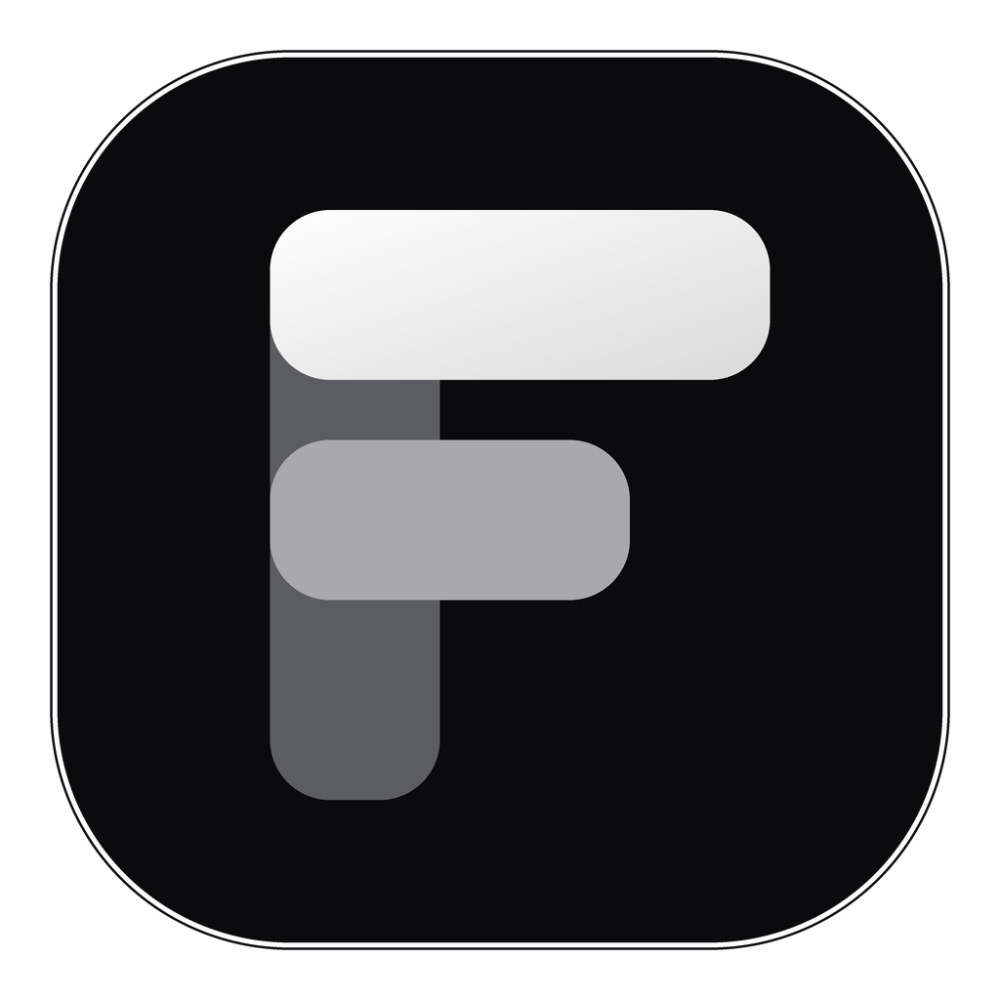
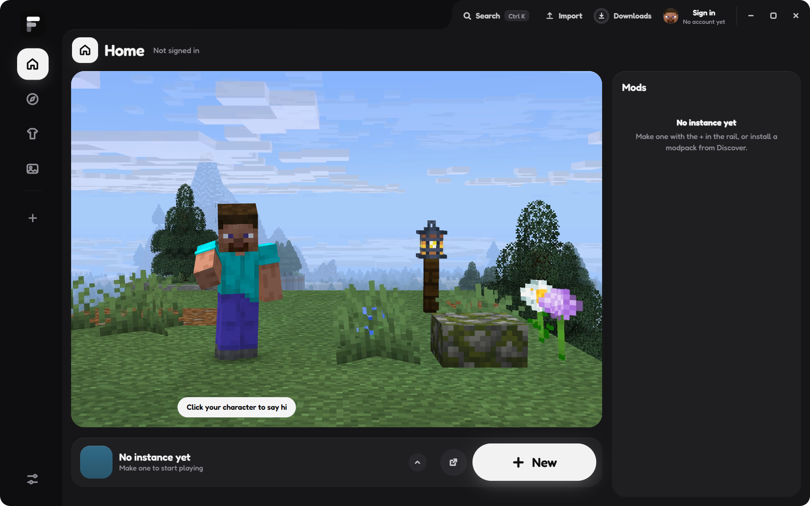

One click. Every mod.
Find mods, modpacks, resource packs and shaders on Modrinth and install them straight into an instance. Dependencies come with them.
- Modrinth
- Fabric
- Forge
- NeoForge
- Quilt

Five LauncherA fast, clean Minecraft launcher. Mods, modpacks, resource packs and shaders from Modrinth in one click.

Features
Find mods, modpacks, resource packs and shaders on Modrinth and install them straight into an instance. Dependencies come with them.
Change your skin with a live 3D preview, posed skin cards and Import skin.
Game options, servers, resource packs and hotbars stay in sync across every instance.
Sign in with your Minecraft account. Switch accounts in one click.
Import and export .mrpack files, or drag one onto the window.
28 ready-made instance icons or your own picture, and Discord status with your pack's icon.
When a new version is out, an Update button appears in the top bar. One click.
Updates
FAQ
Five Launcher isn't code-signed yet, so SmartScreen warns about new apps. Click More info, then Run anyway. The setup is the same file published on our GitHub releases.
You choose the folder during setup. Your instances and worlds stay when you uninstall unless you remove them.
Yes: Fabric, Forge, NeoForge and Quilt, with mods, modpacks, resource packs and shaders from Modrinth.
When a new version is out, an Update button appears in the top bar. One click and it restarts on the new version.